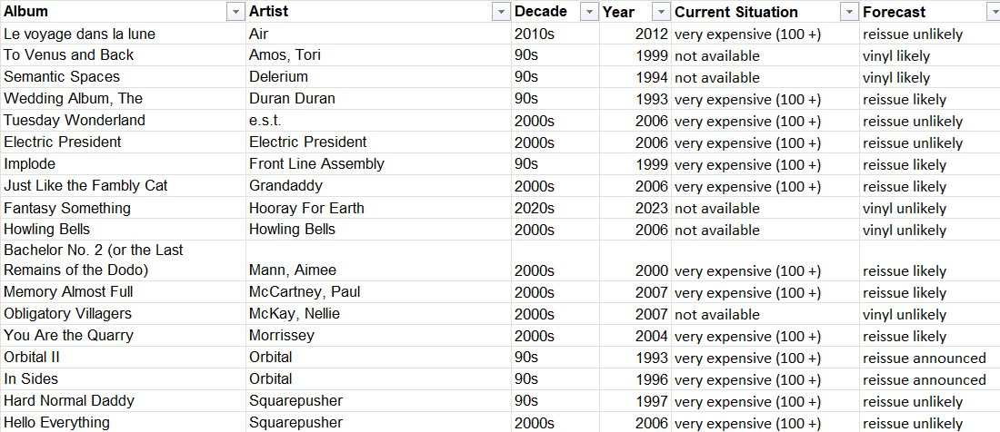
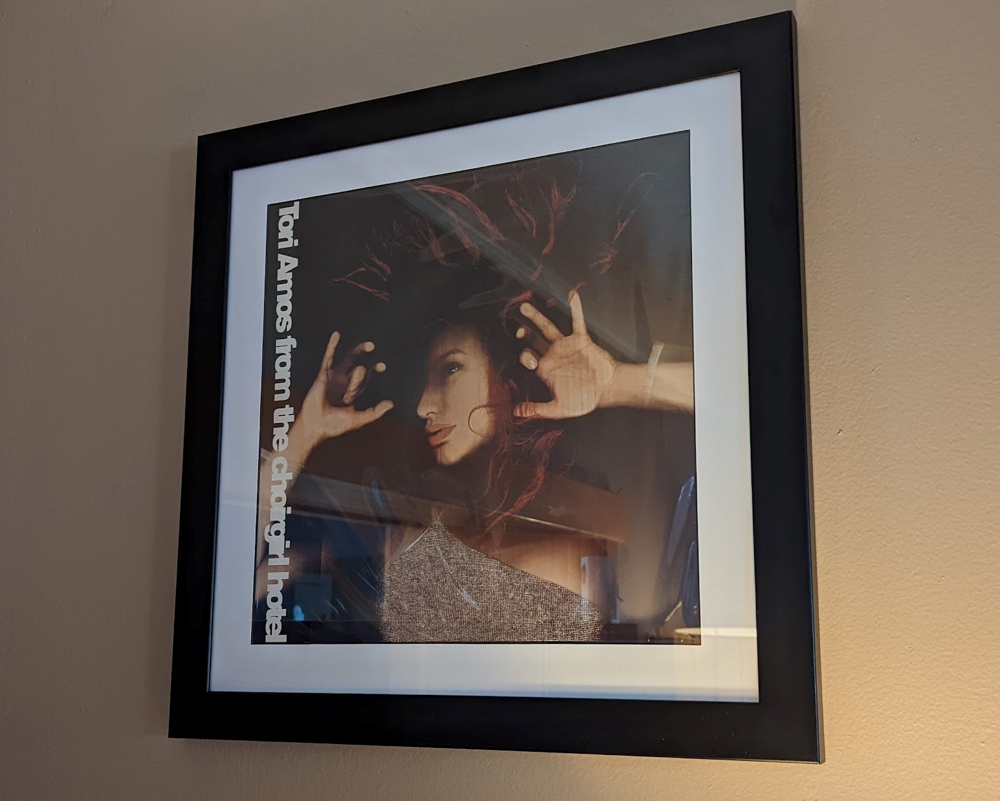
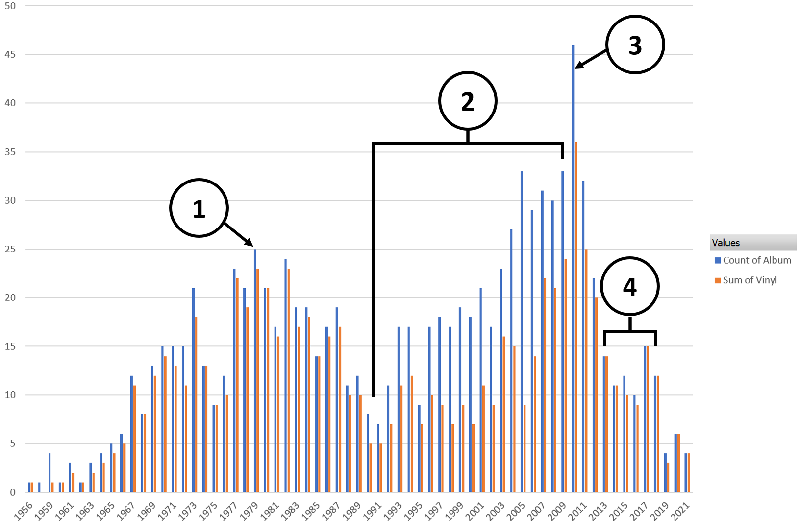

The Life Music Project¶
For over ten years I have been slowly working on a personal project to create a definitive list of my favorite pop music albums. Music has played a special role in my life, and I want to create a canonical list of my favorites. These pages will serve as the final document of this process.
{kind=link}
At the time of my writing this introduction (12 Aug 2021), I have compiled a list of 994 albums spanning the years of 1956 to the current day. I’m not sure how long this final portion of the project will take, and it is very possible the list could expand or morph significantly as I go.
UPDATE 31 May 2025
It has only been four months since I last updated this, but two big milestones have happened. First, I was totally wrong about how long it would take to get to 90% of my favorites on vinyl. That happened in April of this year (1030 of 1141 favorites on vinyl as of this writing). Second, I have made the first big reorganization of the site. The decade pages were becoming long and unruly, and each year deserved its own page. Also, I was finding that some of my memories were becoming incoherent,even to myself, so I added some additional footnote context to help this site read a bit better. I did a word count and I have written just about 100k words so far! That is about the size of a 400 page book. This has turned into an extensive and immensely rewarding project, and I’m only just a little over the halfway point. I’m really enjoying the process of writing all this down, and I look forward to reading it again someday when this all feels more nostalgic than some of it already has become.
UPDATE 24 Jan 2025
It has been about another year so time for an update. I’m not moving through documenting the years as quickly as planned. My target of wrapping this by the end of 2025 isn’t going to happen, and that is OK. This is definitely the kind of thing that I should only work on when I feel excited to do it. When I am in the mood for it, there are few things that I enjoy more in my free hours. I now have covered the 30 year interval between 1994 and 2024. At this point I am cataloging my favorites from the years of my childhood. Working backwards, I will soon be in the years before my time as a music consumer, and beyond that, the years before my existence as a living human.
As for the continued expansion of my vinyl collection, there was modest progress. In preparation for the continued work here, I obtained what remained from my 90s wishlist and was commonly available. I’m also working ahead a bit evaluating records from the 1980s that I was considering adding to that list of favorites. In addition to those threads of acquisition, there were another 7-8 favorites from each of the last two years, and the ongoing program of twenty year anniversary releases that filled in some gaps in from the naughts. For the first time I also made some significant revisions to the years already cataloged, with a handful joining the list, and a handful leaving. At this point I have recorded 1134 favorites, 1019 of which I own on my preferred format. This puts me at 89.85%, right on the threshold of what I believe to be a kind of 90% theoretical limit on this metric. Interestingly, acquiring only two favorites already on my list would push me over the threshold, but it would take adding 16 new favorites on vinyl to the list to achieve it that way. While I am very close, it could still take a few years to reach that number. Every new favorite I add without the possibility for vinyl knocks me back a fair distance.
The biggest factor that makes me realize 90% isn’t happening any time soon is the dwindling list of potential acquisitions [Correction: It actually took three months after I wrote this to hit 90%]. I have been collecting vinyl records of my favorite albums since I was in my mid-twenties (I feel lucky to have gotten in when things were way cheaper). I have everything I want from before 1993. The better part of two decades later, these are the last 18 I am looking for. I have reached the point where they have never been available on the format, or are way more expensive than I am willing to pay. I’ve been at this long enough to have a sense of what is likely to get a reissue and I think I have a good shot at maybe ten more of these in the years ahead.
{kind=link}
UPDATE 26 Jan 2024
I have been trying to do a check-in about every year, and this one is a little behind that schedule. That said, things continue to progress at a fairly decent rate. In the almost 18 months since the last update, I have completed years 1997-2008 and continue my journey through the 90s. I have passed an interesting milestone working backward through the years. I’m now finding that the large majority of my favorite albums for a year were discovered well after release. It won’t be long until I get to the point where I will have been too young to have even been aware of the my favorites in their year of release. I have a new goal of trying to finish this site before the year 2025, which would make the list span an even 70 years at completion.
The work slowed down in early 2023 when I made another batch of purchases to fill gaps in the vinyl collection of my favorites. That effort, plus a surprising number of vinyl reissues has greatly reduced the percentage of favorites that I do not own as an LP. As I type this, my list stands at 1103 albums, of which 973 I own on my preferred format. This is a ratio of 88%, and a big increase over the last update on statistics. That said, the significant progress has led me to a state where there aren’t many opportunities for additional increases. Of the 130 I do not own on vinyl, I only care to add 26 in that format. Eight of those albums have never been pressed as a record, or were made in such a small volume that I am likely to never see a copy in the wild. Of the remaining set, only five ever are sold for less than $100. I do expect to continue to add new favorites, and occasionally add records already on the list, but progress in this area will be slowing down significantly. This is a good thing, because I really don’t have much room for more records. It does seem that very slowly over time I may converge to 90%.
UPDATE 7 Aug 2022:
I’ve been at this for one week short of a full year. In that time I have cataloged the years 2009-2021 working backwards. I have decided to keep a running list of my favorites from the current year as they happen. My list of favorites has grown by 32 to a total of 1026. I am not quite a quarter of the way through the process, and it this rate it will take another 3-4 years to finish the catalog. Interestingly the year 2009 was around the time that I started to think about doing something like this, though at that point the project was much smaller in scope and related to my favorite albums of the aughts. I look forward to taking on that project next.
This started as a project 98% for myself and it has probably ended up being more than 99% something that no one else would ever care about. The more personal it has become, the more I have enjoyed it. At some point when I got far enough back from the current day, I decided to add a personal memory to each record. This is as much my musical autobiography as it is my catalog of favorites.
Someday I will update the analytic section, but for now here are a few summary statistics to capture things at this moment in time. I now own 826 of my favorites on vinyl. There are exactly 200 records that are not in my vinyl collection. Around 25 of these albums were never issued on vinyl, and over half of them I do not want to acquire for a variety of reasons. That leaves 52 records that I would gladly add to my collection if I could find them at a reasonable price. That said only five of these are currently selling at a price I would be willing to give. At this point I’m almost leaving these titles as something to look for when I visit a record store.
One of the goals of this project was to build a collection that properly represented my tastes throughout life. Early in this project I realized that I was converging towards owning 80% of my favorites on vinyl. I crossed that threshold in July of 2022 with a special purchase. I imported a near mint copy of From the Choirgirl Hotel from Italy. It was a semi-extravagance that put a close to the era of significant vinyl acquisition. It now sits in a frame on my wall
{kind=link}
Why am I doing this?¶
In 2011 the music streaming website Spotify was launched. It didn’t start off with everything, but it did start with 90% of everything. All of a sudden those CDs and MP3s I had been collecting and curating didn’t matter so much anymore. I keep pretty detailed records on these kinds of things, and at the dawn of the Spotify era I had a collection of 2035 albums in various formats. Roughly the first 600 of those were acquired solely on compact disc in what we now call the “physical media era.” I know the content of those 600 discs in a way that I will never know music again. Yes this is partially because pop music is not just an art form, but a cornerstone of youth culture. I was in my teens and early 20s in those days and that is a factor. However, I do believe the most significant factor was the way that I obtained and consumed that music. When you pay significant money to get a physical item that you need to store and take care of, you engage with it differently than a data file that you got for little (or no) money. The rise of the MP3 changed my relationship with music forever. Not only was a obtaining music more quickly, I was no longer limited by the selection at the local record store. This made it much easier to try out new things and discover music I may not have otherwise encountered. It also changed, in somewhat negative ways, how I searched for new music. Before the MP3 it almost required research and study to carefully expand upon the favorites you currently knew and discover artists and albums that could become new favorites. If the MP3 disrupted the way that I discovered and acquired new music, Spotify destroyed it. At the time of my writing this, 98.8% of my favorite albums are available to stream on the platform, and there are limitless options for what to play next. In the streaming era it can become difficult to remember what music I liked, or even listened to. I know exactly what I listened to when I was 15, because it sits on shelves down in my basement. This project is an attempt to create a universal model of “my music” through all eras.
What do I hope to Learn?¶
What are my “personal, canonical favorites?” - I want a consistent understanding of what my favorite music is throughout the various eras of music, and my various methods of music consumption.
What vinyl records do I really want? - My interest in physical media has led me to compile my “ultimate music collection” in the form of vinyl records. I like the idea of generally bounding this collection to my true favorites.
When did I “get old?” - Like most people, I have the strong feeling that at some point in the last 10 years I lost touch with not only with popular music, but also my connections to the youth culture it represents. When exactly did this happen to me? (edit: I now know it was 2014)
Why is music so important to me? - When I really got into the meat of this project, it started to become clear that I was learning a lot about myself through my relationship with this music. I look forward to this continuing in the final phase of this project.
What are the rules?¶
No rankings - I’m not interested in creating rankings or top tens. This is a binary classification problem. Is an album one of my favorites (y/n)?
Things will change - The initial list was crafted carefully and rigorously, but I’m sure as I document things, there will be additions and possibly removals. At a minimum, this will take a year or two to write down, and I will have new favorites from the years that pass.
Only my arbitrary definition of pop music - This isn’t all music only “pop”, no classical for instance. This includes rock, rap, R&B, jazz, and electronic music. It even includes contemporary classical music that is made with a a rock and roll spirit. So Philip Glass is in, Leonard Bernstein is out. Except for West Side Story, because musicals are in.
I’m not reviewing I’m reflecting - This is about what albums are my favorite and why. I’m not qualified to write a review, or interested in doing so.
Aren’t there already websites for this kind of thing?¶
Yes, there are music social networking sites (e.g. last.fm, RateYourMusic) that are quite popular. I have experimented with them in the past, and have even started this project in some form on them before. The truth is this is the kind of deeply personal project where I want full control. Also, modern static site generators have made it very easy to get high quality, flexible results from simple markdown language text files. Right now I’m using Python/Sphinx/ReStructuredText to make what you are currently seeing, but that could be quickly changed over to something else. Also, I miss the early days of the web when you would sit down with a text editor and craft a web publication by hand. Most of all, while my personal relationship with music is very important to me, I don’t expect it to matter very much to anyone else. So this project is 98% for myself, and I don’t care about the social reach those other platforms might offer me. I’ll probably occasionally post to my socials to let folks know I am working on this, but I assume there will be little to no interest from others in what I put here.
Will there will be analytics?¶
Yes, I can’t help myself. More to come I’m sure, but for now here is a chart of my favorite albums by year. It also shows how many of my favorites from each year are in my curated vinyl collection. I currently own 76% of my favorites on vinyl.
{kind=link}
Some observations from the data:
The peak of the first mode in the plot occurs in the year 1979. This makes sense, because if you were to ask me what the best year in music was, this would be my answer.
There is a period between about 1990 and 2009 where the percentage of my favorites that I own on vinyl plummets. This is pretty much the “vinyl dark ages” from the rise of the CD until the the vinyl revival started in earnest. I would buy the records if they could be sourced for an affordable price. This ratio will be greatly improved by the phenomena of the “20 year vinyl reissue”.
The peak of the second mode, and the highest peak occurs in 2010. This year was the culmination of the MP3 era, and I was writing for a local music blog, hearing more music than I did at any other point in my life. It was also before Spotify choice fatigue started to become a thing.
Somewhere in the middle of the 2010s I became “old” and set in my ways. But when exactly did it happen, and why? (Edit: The answer is 2014, but the why is still unclear).